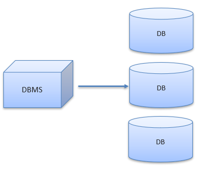
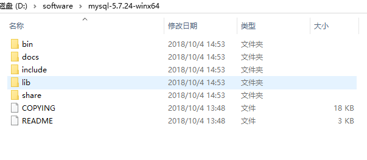
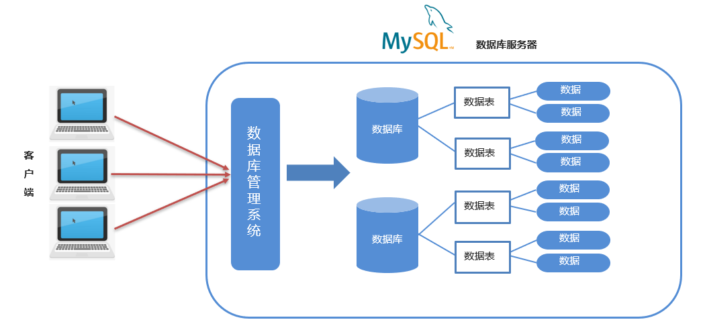
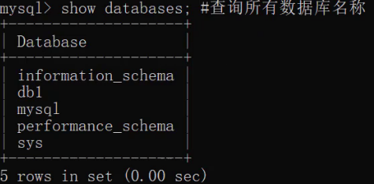
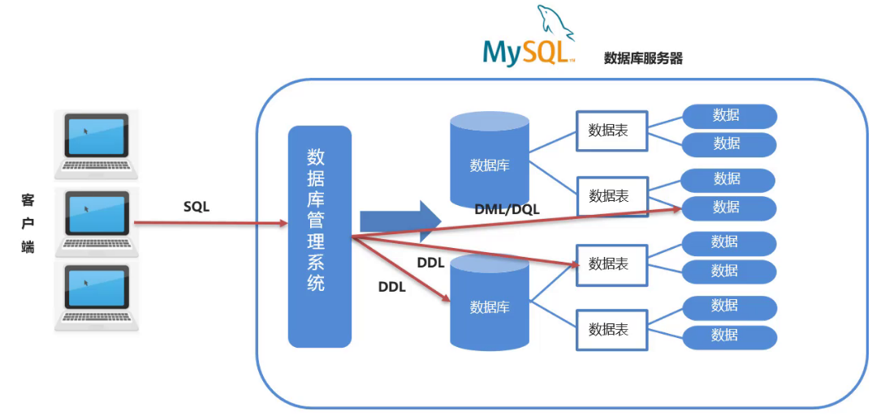
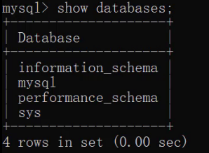
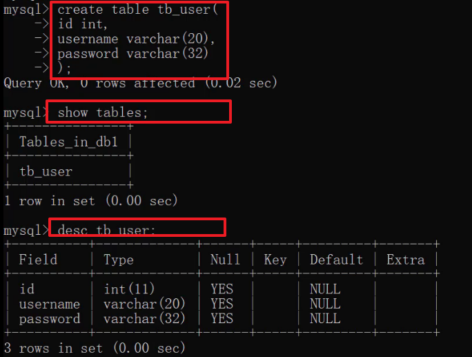
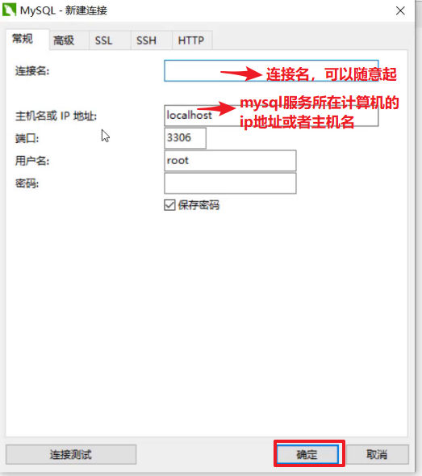
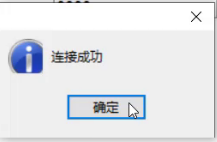

javaweb-01-mysql安装及基础
本文最后更新于：2022年8月15日 晚上
本文是黑马程序员的JavaWeb基础教程的配套官方笔记，仅供学习使用 此外，此为本文所需软件下载链接,密码为
1111
MySQL基础
今日目标：
- 完成MySQL的安装及登陆基本操作
- 能通过SQL对数据库进行CRUD
- 能通过SQL对表进行CRUD
- 能通过SQL对数据进行CRUD
1，数据库相关概念
以前我们做系统，数据持久化的存储采用的是文件存储。存储到文件中可以达到系统关闭数据不会丢失的效果，当然文件存储也有它的弊端。
假设在文件中存储以下的数据：
1 | |
现要修改李四这条数据的性别数据改为男，我们现学习的IO技术可以通过将所有的数据读取到内存中，然后进行修改再存到该文件中。通过这种方式操作存在很大问题，现在只有三条数据，如果文件中存储1T的数据，那么就会发现内存根本就存储不了。
现需要既能持久化存储数据，也要能避免上述问题的技术使用在我们的系统中。数据库就是这样的一门技术。
1.1 数据库
==存储和管理数据的仓库，数据是有组织的进行存储。==
数据库英文名是 DataBase，简称DB。
数据库就是将数据存储在硬盘上，可以达到持久化存储的效果。那又是如何解决上述问题的？使用数据库管理系统。
1.2 数据库管理系统
- ==管理数据库的大型软件==
- 英文：DataBase Management System，简称 DBMS
在电脑上安装了数据库管理系统后，就可以通过数据库管理系统创建数据库来存储数据，也可以通过该系统对数据库中的数据进行数据的增删改查相关的操作。我们平时说的MySQL数据库其实是MySQL数据库管理系统。

通过上面的描述，大家应该已经知道了 数据库管理系统 和
数据库 的关系。那么有有哪些常见的数据库管理系统呢？
1.3 常见的数据库管理系统

接下来对上面列举的数据库管理系统进行简单的介绍：
- Oracle：收费的大型数据库，Oracle 公司的产品
- ==MySQL==： 开源免费的中小型数据库。后来 Sun公司收购了 MySQL，而 Sun 公司又被 Oracle 收购
- SQL Server：MicroSoft 公司收费的中型的数据库。C#、.net 等语言常使用
- PostgreSQL：开源免费中小型的数据库
- DB2：IBM 公司的大型收费数据库产品
- SQLite：嵌入式的微型数据库。如：作为 Android 内置数据库
- MariaDB：开源免费中小型的数据库
我们课程上学习的是MySQL数据库管理系统，PostgreSQL在一些公司也有使用，此时大家肯定会想以后在公司中如果使用我们没有学习过程的PostgreSQL数据库管理系统怎么办？这点大家大可不必担心，如下图所示：

我们可以通过数据库管理系统操作数据库，对数据库中的数据进行增删改查操作，而怎么样让用户跟数据库管理系统打交道呢？就可以通过一门编程语言（SQL）来实现。
1.4 SQL
- 英文：Structured Query Language，简称 SQL，结构化查询语言
- 操作关系型数据库的编程语言
- 定义操作所有关系型数据库的统一标准，可以使用SQL操作所有的关系型数据库管理系统，以后工作中如果使用到了其他的数据库管理系统，也同样的使用SQL来操作。
2，MySQL
2.1 MySQL安装
安装环境:Win10 64位 软件版本:MySQL 5.7.24 解压版
2.1.1 下载
通过本文开头的百度网盘链接即可下载。
2.1.2 安装(解压)
下载完成后我们得到的是一个压缩包，将其解压，我们就可以得到MySQL 5.7.24的软件本体了(就是一个文件夹)，我们可以把它放在你想安装的位置。

2.2 MySQL卸载
如果你想卸载MySQL，也很简单。
右键开始菜单，选择命令提示符(管理员)，打开黑框。
- 敲入
net stop mysql，回车。
1 | |

- 再敲入
mysqld -remove mysql，回车。
1 | |

- 最后删除MySQL目录及相关的环境变量。
至此，MySQL卸载完成！
2.3 MySQL配置
2.3.1 添加环境变量
环境变量里面有很多选项，这里我们只用到
Path这个参数。为什么在初始化的开始要添加环境变量呢？ 在黑框(即CMD)中输入一个可执行程序的名字，Windows会先在环境变量中的Path所指的路径中寻找一遍，如果找到了就直接执行，没找到就在当前工作目录找，如果还没找到，就报错。我们添加环境变量的目的就是能够在任意一个黑框直接调用MySQL中的相关程序而不用总是修改工作目录，大大简化了操作。
右键此电脑→属性，点击高级系统设置

点击环境变量

在系统变量中新建MYSQL_HOME

在系统变量中找到并双击Path

点击新建

最后点击确定。
如何验证是否添加成功？
右键开始菜单(就是屏幕左下角)，选择命令提示符(管理员)，打开黑框，敲入mysql，回车。
如果提示Can't connect to MySQL server on 'localhost'则证明添加成功；
如果提示mysql不是内部或外部命令，也不是可运行的程序或批处理文件则表示添加添加失败，请重新检查步骤并重试。
2.3.2 新建配置文件
新建一个文本文件，内容如下：
1 | |
把上面的文本文件另存为，在保存类型里选所有文件 (*.*)，文件名叫my.ini，存放的路径为MySQL的根目录(例如我的是D:\software\mysql-5.7.24-winx64,根据自己的MySQL目录位置修改)。


上面代码意思就是配置数据库的默认编码集为utf-8和默认存储引擎为INNODB。
2.3.3 初始化MySQL
在刚才的黑框中敲入mysqld --initialize-insecure，回车，稍微等待一会，如果出现没有出现报错信息(如下图)则证明data目录初始化没有问题，此时再查看MySQL目录下已经有data目录生成。
1 | |
tips：如果出现如下错误

是由于权限不足导致的，去C:\Windows\System32
下以管理员方式运行 cmd.exe


2.3.4 注册MySQL服务
在黑框里敲入mysqld -install，回车。
1 | |

现在你的计算机上已经安装好了MySQL服务了。
MySQL服务器
2.3.5 启动MySQL服务
在黑框里敲入net start mysql，回车。
1 | |

2.3.6 修改默认账户密码
在黑框里敲入mysqladmin -u root password 1234，这里的1234就是指默认管理员(即root账户)的密码，可以自行修改成你喜欢的。
1 | |

至此，MySQL 5.7 解压版安装完毕！
2.4 MySQL登陆和退出
2.4.1 登陆
右键开始菜单，选择命令提示符，打开黑框。
在黑框中输入，mysql -uroot -p1234，回车，出现下图且左下角为mysql>，则登录成功。
1 | |

到这里你就可以开始你的MySQL之旅了！
登陆参数：
1 | |
2.4.2 退出
退出mysql：
1 | |
2.5 MySQL数据模型
关系型数据库：
关系型数据库是建立在关系模型基础上的数据库，简单说，关系型数据库是由多张能互相连接的 二维表 组成的数据库
如下图，订单信息表 和 客户信息表
都是有行有列二维表我们将这样的称为关系型数据库。

接下来看关系型数据库的优点：
- 都是使用表结构，格式一致，易于维护。
- 使用通用的 SQL 语言操作，使用方便，可用于复杂查询。
- 关系型数据库都可以通过SQL进行操作，所以使用方便。
- 复杂查询。现在需要查询001号订单数据，我们可以看到该订单是1号客户的订单，而1号订单是李聪这个客户。以后也可以在一张表中进行统计分析等操作。
- 数据存储在磁盘中，安全。
数据模型：

如上图，我们通过客户端可以通过数据库管理系统创建数据库，在数据库中创建表，在表中添加数据。创建的每一个数据库对应到磁盘上都是一个文件夹。比如可以通过SQL语句创建一个数据库（数据库名称为db1），语句如下。该语句咱们后面会学习。

我们可以在数据库安装目录下的data目录下看到多了一个 db1
的文件夹。所以，在MySQL中一个数据库对应到磁盘上的一个文件夹。
而一个数据库下可以创建多张表，我们到MySQL中自带的mysql数据库的文件夹目录下：

而上图中右边的 db.frm 是表文件，db.MYD
是数据文件，通过这两个文件就可以查询到数据展示成二维表的效果。
小结：
- MySQL中可以创建多个数据库，每个数据库对应到磁盘上的一个文件夹
- 在每个数据库中可以创建多个表，每张都对应到磁盘上一个 frm 文件
- 每张表可以存储多条数据，数据会被存储到磁盘中 MYD 文件中
3，SQL概述
了解了数据模型后，接下来我们就学习SQL语句，通过SQL语句对数据库、表、数据进行增删改查操作。
3.1 SQL简介
- 英文：Structured Query Language，简称 SQL
- 结构化查询语言，一门操作关系型数据库的编程语言
- 定义操作所有关系型数据库的统一标准
- 对于同一个需求，每一种数据库操作的方式可能会存在一些不一样的地方，我们称为“方言”
3.2 通用语法
SQL 语句可以单行或多行书写，以分号结尾。

如上，以分号结尾才是一个完整的sql语句。
MySQL 数据库的 SQL 语句不区分大小写，关键字建议使用大写。
同样的一条sql语句写成下图的样子，一样可以运行处结果。

注释
单行注释: -- 注释内容 或 #注释内容(MySQL 特有)


注意：使用-- 添加单行注释时，--后面一定要加空格，而#没有要求。
多行注释: /* 注释 */
3.3 SQL分类
DDL(Data Definition Language) ： 数据定义语言，用来定义数据库对象：数据库，表，列等
DDL简单理解就是用来操作数据库，表等

DML(Data Manipulation Language) 数据操作语言，用来对数据库中表的数据进行增删改
DML简单理解就对表中数据进行增删改

DQL(Data Query Language) 数据查询语言，用来查询数据库中表的记录(数据)
DQL简单理解就是对数据进行查询操作。从数据库表中查询到我们想要的数据。
DCL(Data Control Language) 数据控制语言，用来定义数据库的访问权限和安全级别，及创建用户
DML简单理解就是对数据库进行权限控制。比如我让某一个数据库表只能让某一个用户进行操作等。
注意： 以后我们最常操作的是
DML和DQL，因为我们开发中最常操作的就是数据。
4，DDL:操作数据库
我们先来学习DDL来操作数据库。而操作数据库主要就是对数据库的增删查操作。
4.1 查询
查询所有的数据库
1 | |
运行上面语句效果如下：

上述查询到的是的这些数据库是mysql安装好自带的数据库，我们以后不要操作这些数据库。
4.2 创建数据库
- 创建数据库：
1 | |
运行语句效果如下：

而在创建数据库的时候，我并不知道db1数据库有没有创建，直接再次创建名为db1的数据库就会出现错误。

为了避免上面的错误，在创建数据库的时候先做判断，如果不存在再创建。
- 创建数据库(判断，如果不存在则创建)
1 | |
运行语句效果如下：

从上面的效果可以看到虽然db1数据库已经存在，再创建db1也没有报错，而创建db2数据库则创建成功。
4.3 删除数据库
- 删除数据库
1 | |
- 删除数据库(判断，如果存在则删除)
1 | |
运行语句效果如下：

4.4 使用数据库
数据库创建好了，要在数据库中创建表，得先明确在哪儿个数据库中操作，此时就需要使用数据库。
- 使用数据库
1 | |
- 查看当前使用的数据库
1 | |
运行语句效果如下：

5，DDL:操作表
操作表也就是对表进行增（Create）删（Retrieve）改（Update）查（Delete）。
5.1 查询表
- 查询当前数据库下所有表名称
1 | |
我们创建的数据库中没有任何表，因此我们进入mysql自带的mysql数据库，执行上述语句查看

- 查询表结构
1 | |
查看mysql数据库中func表的结构，运行语句如下：

5.2 创建表
- 创建表
1 | |
注意：最后一行末尾，不能加逗号
知道了创建表的语句，那么我们创建创建如下结构的表

1 | |
运行语句如下：

5.3 数据类型
MySQL 支持多种类型，可以分为三类：
数值
1
2
3
4
5
6tinyint : 小整数型，占一个字节
int ： 大整数类型，占四个字节
eg ： age int
double ： 浮点类型
使用格式： 字段名 double(总长度,小数点后保留的位数)
eg ： score double(5,2)日期
1
2
3date ： 日期值。只包含年月日
eg ：birthday date ：
datetime ： 混合日期和时间值。包含年月日时分秒字符串
1
2
3
4
5
6
7
8char ： 定长字符串。
优点：存储性能高
缺点：浪费空间
eg ： name char(10) 如果存储的数据字符个数不足10个，也会占10个的空间
varchar ： 变长字符串。
优点：节约空间
缺点：存储性能底
eg ： name varchar(10) 如果存储的数据字符个数不足10个，那就数据字符个数是几就占几个的空间
注意：其他类型参考资料中的《MySQL数据类型].xlsx》
案例：
1 | |
语句设计如下：
1 | |
5.4 删除表
- 删除表
1 | |
- 删除表时判断表是否存在
1 | |
运行语句效果如下：

5.5 修改表
- 修改表名
1 | |
- 添加一列
1 | |
- 修改数据类型
1 | |
- 修改列名和数据类型
1 | |
- 删除列
1 | |
6，navicat使用
通过上面的学习，我们发现在命令行中写sql语句特别不方便，尤其是编写创建表的语句，我们只能在记事本上写好后直接复制到命令行进行执行。那么有没有刚好的工具提供给我们进行使用呢？ 有。
6.1 navicat概述
- Navicat for MySQL 是管理和开发 MySQL 或 MariaDB 的理想解决方案。
- 这套全面的前端工具为数据库管理、开发和维护提供了一款直观而强大的图形界面。
- 官网： http://www.navicat.com.cn
6.2 navicat安装
参考 : 资料_mysql_x86.md
6.3 navicat使用
6.3.1 建立和mysql服务的连接
第一步： 点击连接，选择MySQL
第二步：填写连接数据库必要的信息

以上操作没有问题就会出现如下图所示界面：

6.3.2 操作
连接成功后就能看到如下图界面：

- 修改表结构
通过下图操作修改表结构：

点击了设计表后即出现如下图所示界面，在图中红框中直接修改字段名，类型等信息：

- 编写SQL语句并执行
按照如下图所示进行操作即可书写SQL语句并执行sql语句。

7，DML
DML主要是对数据进行增（insert）删（delete）改（update）操作。
7.1 添加数据
- 给指定列添加数据
1 | |
- 给全部列添加数据
1 | |
- 批量添加数据
1 | |
- 练习
为了演示以下的增删改操作是否操作成功，故先将查询所有数据的语句介绍给大家：
1 | |
1 | |
7.2 修改数据
- 修改表数据
1 | |
注意：
- 修改语句中如果不加条件，则将所有数据都修改！
- 像上面的语句中的中括号，表示在写sql语句中可以省略这部分
练习
- 将张三的性别改为女
1
update stu set sex = '女' where name = '张三';将张三的生日改为 1999-12-12 分数改为99.99
1
update stu set birthday = '1999-12-12', score = 99.99 where name = '张三';注意：如果update语句没有加where条件，则会将表中所有数据全部修改！
1
update stu set sex = '女';上面语句的执行完后查询到的结果是：

7.3 删除数据
- 删除数据
1 | |
- 练习
1 | |
8，DQL
下面是黑马程序员展示试题库数据的页面

页面上展示的数据肯定是在数据库中的试题库表中进行存储，而我们需要将数据库中的数据查询出来并展示在页面给用户看。上图中的是最基本的查询效果，那么数据库其实是很多的，不可能在将所有的数据在一页进行全部展示，而页面上会有分页展示的效果，如下：
当然上图中的难度字段当我们点击也可以实现排序查询操作。从这个例子我们就可以看出，对于数据库的查询时灵活多变的，需要根据具体的需求来实现，而数据库查询操作也是最重要的操作，所以此部分需要大家重点掌握。
接下来我们先介绍查询的完整语法：
1 | |
为了给大家演示查询的语句，我们需要先准备表及一些数据：
1 | |
接下来咱们从最基本的查询语句开始学起。
8.1 基础查询
8.1.1 语法
- 查询多个字段
1 | |
- 去除重复记录
1 | |
- 起别名
1 | |
8.1.2 练习
查询name、age两列
1
select name,age from stu;查询所有列的数据，列名的列表可以使用*替代
1
select * from stu;上面语句中的*不建议大家使用，因为在这写*不方便我们阅读sql语句。我们写字段列表的话，可以添加注释对每一个字段进行说明

而在上课期间为了简约课程的时间，老师很多地方都会写*。
查询地址信息
1
select address from stu;执行上面语句结果如下：

从上面的结果我们可以看到有重复的数据，我们也可以使用
distinct关键字去重重复数据。去除重复记录
1
select distinct address from stu;查询姓名、数学成绩、英语成绩。并通过as给math和english起别名（as关键字可以省略）
1
2select name,math as 数学成绩,english as 英文成绩 from stu;
select name,math 数学成绩,english 英文成绩 from stu;
8.2 条件查询
8.2.1 语法
1 | |
- 条件
条件列表可以使用以下运算符

8.2.2 条件查询练习
查询年龄大于20岁的学员信息
1
select * from stu where age > 20;查询年龄大于等于20岁的学员信息
1
select * from stu where age >= 20;查询年龄大于等于20岁 并且 年龄 小于等于 30岁 的学员信息
1
2select * from stu where age >= 20 && age <= 30;
select * from stu where age >= 20 and age <= 30;上面语句中 && 和 and 都表示并且的意思。建议使用 and 。
也可以使用 between ... and 来实现上面需求
1
select * from stu where age BETWEEN 20 and 30;查询入学日期在'1998-09-01' 到 '1999-09-01' 之间的学员信息
1
select * from stu where hire_date BETWEEN '1998-09-01' and '1999-09-01';查询年龄等于18岁的学员信息
1
select * from stu where age = 18;查询年龄不等于18岁的学员信息
1
2select * from stu where age != 18;
select * from stu where age <> 18;查询年龄等于18岁 或者 年龄等于20岁 或者 年龄等于22岁的学员信息
1
2select * from stu where age = 18 or age = 20 or age = 22;
select * from stu where age in (18,20 ,22);查询英语成绩为 null的学员信息
null值的比较不能使用 = 或者 != 。需要使用 is 或者 is not
1
2
3select * from stu where english = null; -- 这个语句是不行的
select * from stu where english is null;
select * from stu where english is not null;
8.2.3 模糊查询练习
模糊查询使用like关键字，可以使用通配符进行占位:
（1）_ : 代表单个任意字符
（2）% : 代表任意个数字符
查询姓'马'的学员信息
1
select * from stu where name like '马%';查询第二个字是'花'的学员信息
1
select * from stu where name like '_花%';查询名字中包含 '德' 的学员信息
1
select * from stu where name like '%德%';
8.3 排序查询
8.3.1 语法
1 | |
上述语句中的排序方式有两种，分别是：
- ASC ： 升序排列 （默认值）
- DESC ： 降序排列
注意：如果有多个排序条件，当前边的条件值一样时，才会根据第二条件进行排序
8.3.2 练习
查询学生信息，按照年龄升序排列
1
select * from stu order by age ;查询学生信息，按照数学成绩降序排列
1
select * from stu order by math desc ;查询学生信息，按照数学成绩降序排列，如果数学成绩一样，再按照英语成绩升序排列
1
select * from stu order by math desc , english asc ;
8.4 聚合函数
8.4.1 概念
==将一列数据作为一个整体，进行纵向计算。==
如何理解呢？假设有如下表

现有一需求让我们求表中所有数据的数学成绩的总和。这就是对math字段进行纵向求和。
8.4.2 聚合函数分类
| 函数名 | 功能 |
|---|---|
| count(列名) | 统计数量（一般选用不为null的列） |
| max(列名) | 最大值 |
| min(列名) | 最小值 |
| sum(列名) | 求和 |
| avg(列名) | 平均值 |
8.4.3 聚合函数语法
1 | |
注意：null 值不参与所有聚合函数运算
8.4.4 练习
统计班级一共有多少个学生
1
2select count(id) from stu;
select count(english) from stu;上面语句根据某个字段进行统计，如果该字段某一行的值为null的话，将不会被统计。所以可以在count(*) 来实现。* 表示所有字段数据，一行中也不可能所有的数据都为null，所以建议使用 count(*)
1
select count(*) from stu;查询数学成绩的最高分
1
select max(math) from stu;查询数学成绩的最低分
1
select min(math) from stu;查询数学成绩的总分
1
select sum(math) from stu;查询数学成绩的平均分
1
select avg(math) from stu;查询英语成绩的最低分
1
select min(english) from stu;
8.5 分组查询
8.5.1 语法
1 | |
注意：分组之后，查询的字段为聚合函数和分组字段，查询其他字段无任何意义
8.5.2 练习
查询男同学和女同学各自的数学平均分
1
select sex, avg(math) from stu group by sex;注意：分组之后，查询的字段为聚合函数和分组字段，查询其他字段无任何意义
1
select name, sex, avg(math) from stu group by sex; -- 这里查询name字段就没有任何意义查询男同学和女同学各自的数学平均分，以及各自人数
1
select sex, avg(math),count(*) from stu group by sex;查询男同学和女同学各自的数学平均分，以及各自人数，要求：分数低于70分的不参与分组
1
select sex, avg(math),count(*) from stu where math > 70 group by sex;查询男同学和女同学各自的数学平均分，以及各自人数，要求：分数低于70分的不参与分组，分组之后人数大于2个的
1
select sex, avg(math),count(*) from stu where math > 70 group by sex having count(*) > 2;
where 和 having 区别：
执行时机不一样：where 是分组之前进行限定，不满足where条件，则不参与分组，而having是分组之后对结果进行过滤。
可判断的条件不一样：where 不能对聚合函数进行判断，having 可以。
8.6 分页查询
如下图所示，大家在很多网站都见过类似的效果，如京东、百度、淘宝等。分页查询是将数据一页一页的展示给用户看，用户也可以通过点击查看下一页的数据。

接下来我们先说分页查询的语法。
8.6.1 语法
1 | |
注意： 上述语句中的起始索引是从0开始
8.6.2 练习
从0开始查询，查询3条数据
1
select * from stu limit 0 , 3;每页显示3条数据，查询第1页数据
1
select * from stu limit 0 , 3;每页显示3条数据，查询第2页数据
1
select * from stu limit 3 , 3;每页显示3条数据，查询第3页数据
1
select * from stu limit 6 , 3;
从上面的练习推导出起始索引计算公式：
1 | |
作者水平有限，有错误请不吝指正，转载请注明出处！